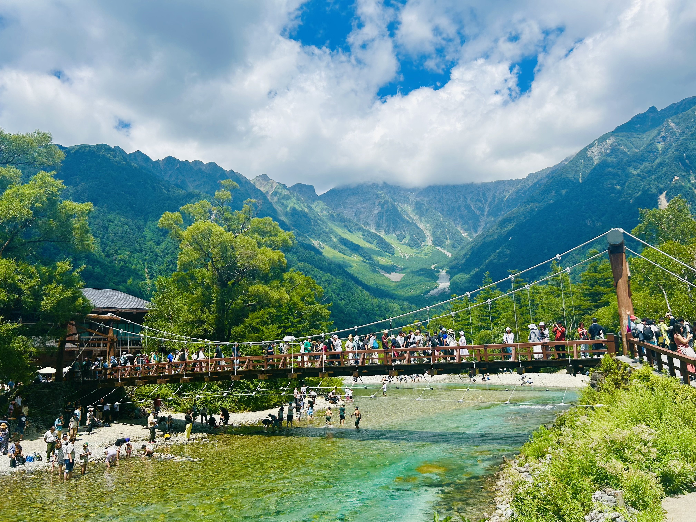
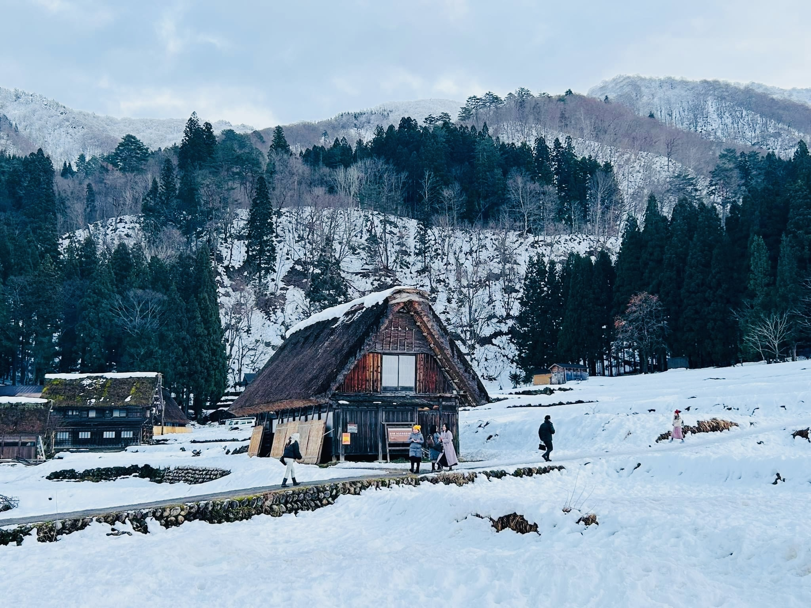
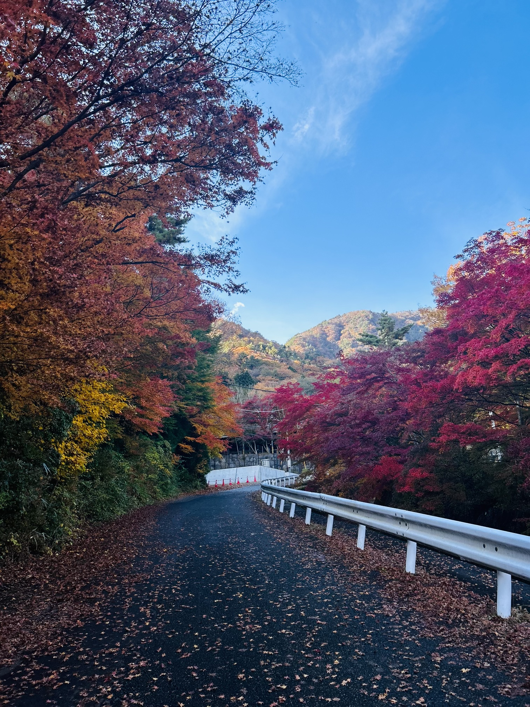
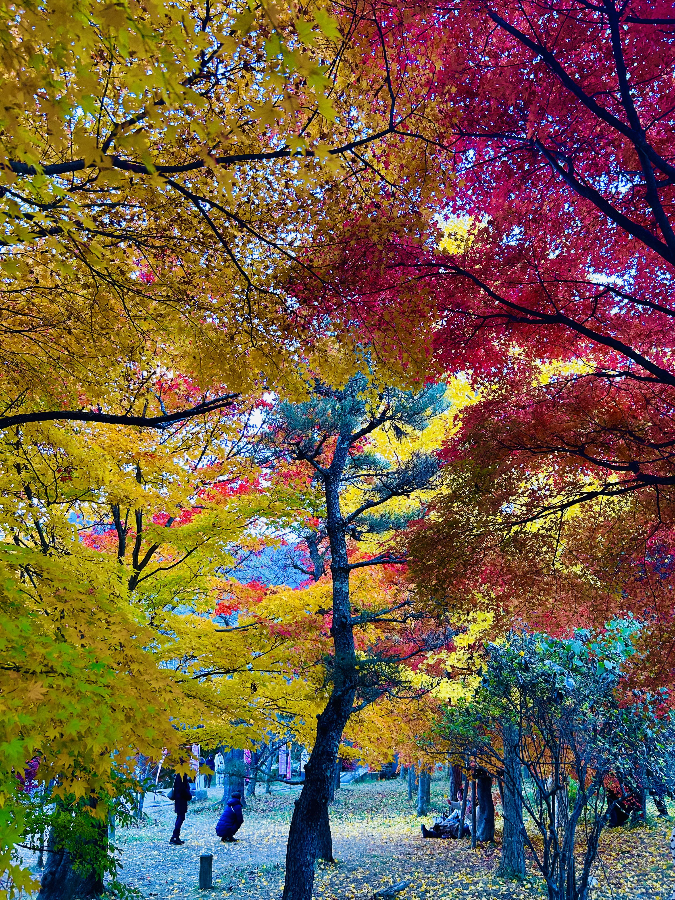

Seasons of Japan 🌸🍁❄️🌞

SPRING 🌸

SUMMER 🎐

AUTUMN 🍁

Join Us on Our Journey
Experience Japan through its beautiful four seasons: cherry blossoms, festivals, autumn leaves, and winter snow. We are a Sri Lankan couple living in Japan, and we love exploring new places together. Here are some of the amazing spots we've visited throughout the seasons.






